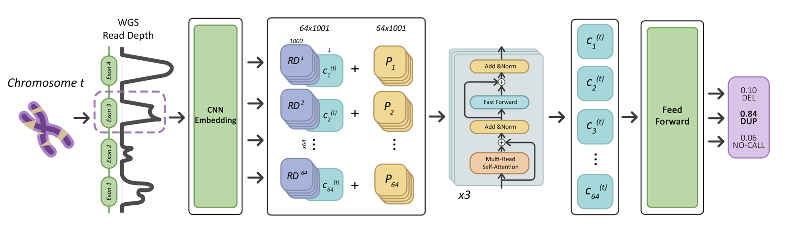

MA Yilmaz*, AA Ceylan*, Gün Kaynar*, AE Cicek
Bioinformatics 41 (Supplement_1), 2025
*Equal contribution
Copy number variants (CNVs) are pivotal in driving phenotypic variation that facilitates species adaptation. They are significant contributors to various disorders, making ancient genomes crucial for uncovering the genetic origins of disease susceptibility across populations. However, detecting CNVs in ancient DNA (aDNA) samples poses substantial challenges due to several factors: aDNA is often highly degraded; contamination from microbial DNA and DNA from closely related species introduces additional noise into sequencing data; and the typically low coverage of aDNA renders accurate CNV detection particularly difficult. Conventional CNV calling algorithms, which are optimized for high-coverage read-depth signals, underperform under such conditions. We introduce LYCEUM, the first machine learning-based CNV caller for aDNA. We employ a two-step training strategy: the model is pre-trained on whole genome sequencing data from the 1000 Genomes Project, then fine-tuned using high-confidence CNV calls derived from a few existing high-coverage aDNA samples adapted to downsampled read depth signals. LYCEUM achieves accurate detection of CNVs even in typically low-coverage ancient genomes, and its segmental deletion calls correlate with the demographic history of the samples and exhibit patterns of negative selection in line with natural selection.
